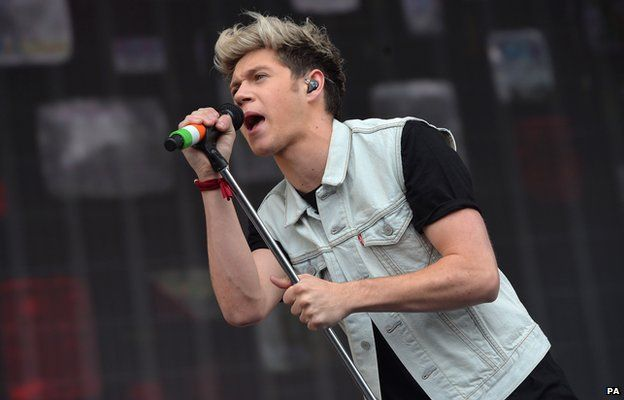
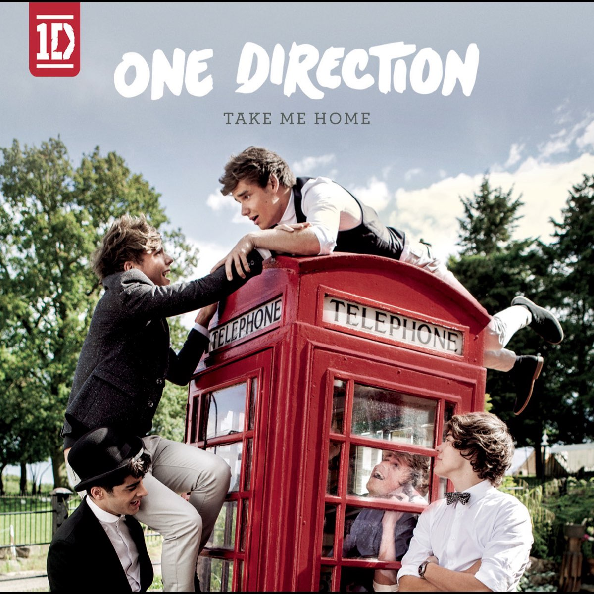
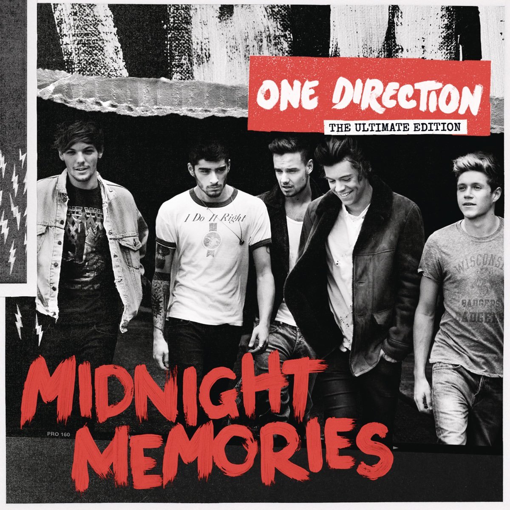
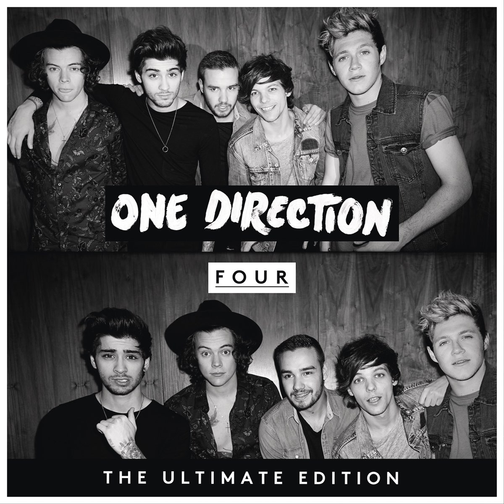

Harry
Harry Styles
Distinct voice, magnetic stage presence, and a style icon loved by fans.
Legends never fade
A fan-made archive celebrating One Direction's music, members, albums, lyrics, memories, and the Directioners who keep the legacy alive.
Members
Albums
Memories
Meet the Legends
Distinct voice, magnetic stage presence, and a style icon loved by fans.
Smooth vocals, unforgettable high notes, and emotional delivery.

Guitar boy energy, warm vocals, and the sunshine of the group.
Songwriter spirit, cheeky humor, and one of the strongest fan bonds.
Strong performer, smooth vocals, and an important voice in the band.
Discography

The beginning of the phenomenon: youthful pop, bright energy, and the start of Directioners.
2011 • What Makes You Beautiful
The colorful era of catchy pop songs, touring energy, and global attention.
2012 • Live While We're Young
The legendary stadium era: guitars, anthems, and a sound that felt bigger than ever.
2013 • Story of My Life
Warm, mature, emotional, and full of fan-favorite songs.
2014 • Night ChangesThe final album before hiatus, remembered as a bittersweet goodbye letter.
2015 • Drag Me Down"You & I."
"Story of My Life."
"Night Changes."
"Best Song Ever."
"Little Things."
"Drag Me Down."
Most Iconic Songs
The nostalgic anthem that reminds fans how fast time moves.
An emotional song that became one of One Direction's most memorable tracks.
The debut hit that introduced One Direction to the world.
Why They Are Legendary
Directioners turned One Direction into more than a band: they became a worldwide cultural moment.
Their songs are still streamed, sung, quoted, and remembered by fans across generations.
From tours to fan edits, One Direction shaped a huge part of 2010s internet and music culture.
Five boys became one band and started a story that changed pop music.
Up All Night introduced the sound, style, and charm of early 1D.
Midnight Memories made the band feel legendary and larger than life.
A bittersweet chapter that became one of the most emotional memories for fans.
Directioners Circle
Share your favorite member, album, lyric, or memory. This makes the website feel like a real fan community, not just a gallery.